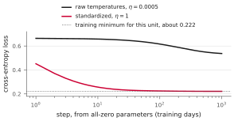
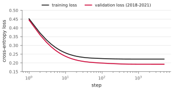
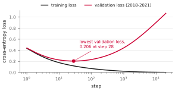

NJIT · CS 301 · INTRODUCTION TO DATA SCIENCE · FALL 2026 PDF
Meeting 7. Deploying the Neuron
Review The Gradient and the Loss Act 1 Filters · Act 2 Cheaper Steps · Act 3 Held-Out Days
Training a unit gives us weights and a bias. Using it on new data also requires a consistent way to prepare the inputs and evidence about how well its predictions generalize. This meeting studies input scaling, updates computed from small batches, and evaluation on days kept out of training.
Act 0. Review: the gradient and the loss
0.1 Probabilities, row costs, and the mean loss
At temperature 1, the unit computes
The bias and threshold are two ways to write the same parameter: \(b=-\theta\). We train one of them. The output \(\hat y_i\) estimates the probability of label 1. The probability assigned to the observed label is
This is the worksheet’s \(p\)(actual). When the label is 0, a small output gives the observed label a high probability.
The model treats labels as independent given the inputs and parameters, so its likelihood is \(\mathcal{L}=\prod_i p_i\). Maximizing this product is equivalent to maximizing \(\sum_i\ln p_i\), because the logarithm is increasing. Computing a sum of log probabilities also avoids underflow from multiplying thousands of small probabilities. Taking the negative mean gives the binary cross-entropy loss:
The signed error \(e_i=\hat y_i-y_i\) and the nonnegative cost \(\ell_i\) are different quantities. An error can be negative; a cross-entropy cost cannot.
Using the mean makes \(L\) a cost per row. Duplicating every row leaves both the mean loss and its gradient unchanged. A unit that outputs \(1/2\) everywhere has mean loss \(\ln2\approx0.693\), whatever the number of rows. This normalization removes the direct scaling with dataset size, but the learning rate still depends on the inputs and loss function.
0.2 Why the derivative contains the error
For one row, suppress the subscript \(i\) and apply the chain rule:
The sigmoid derivative cancels the denominator in the loss derivative. Since \(\partial s/\partial w_j=x_j\), \(\partial s/\partial b=1\), and \(\partial s/\partial\theta=-1\), the parameter derivatives are
Differentiating the mean loss averages these row contributions:
The worksheet’s arithmetic evaluates these symbolic derivatives at particular weights and inputs. For \(d\) inputs there are \(d\) weight derivatives and one bias or threshold derivative.
Example 0.1 One row of the AND table
Use \(\mathbf{w}=(1,2)\) and \(\theta=1.5\). The row \((0,1)\) has label 0, score \(0.5\), and output \(\sigma(0.5)\approx0.6225\). Its cost is \(-\ln(1-\sigma(0.5))\approx0.9741\), while its error is approximately \(0.6225\). The weight derivatives are approximately \((0,0.6225)\) and the threshold derivative is approximately \(-0.6225\).
Changing \(w_1\) cannot affect this row because \(x_1=0\). Increasing \(w_2\) increases its score and cost. Increasing the threshold decreases its score and cost. The derivative signs express these effects.
0.3 Entropy and cross-entropy
For outcome probabilities \(p=(p_k)\) and model probabilities \(q=(q_k)\), define
The surprise of outcome \(k\) under the model is \(-\ln q_k\). Cross-entropy averages that surprise using the outcome probabilities \(p_k\). Entropy is the case in which the model uses those same probabilities. For discrete probability distributions, \(H(p,q)\ge H(p)\), with equality when \(q=p\). Natural logarithms give units of nats; a zero-probability outcome contributes zero to entropy by the convention \(0\ln0=0\).
For one observed binary label, in the order (label 0, label 1), \(p=(1-y,y)\) and \(q=(1-\hat y,\hat y)\). Then \(H(p,q)=-\ln p_i=\ell_i\). Here the vector \(p\) describes labels, whereas the scalar \(p_i\) is the probability the model assigned to the observed label on row \(i\).
For an example with repeated inputs, 14 weather days have a high of \(82^\circ\)F and a low of \(63^\circ\)F. Twelve have label 1 and two have label 0. A model using only these two inputs must give all 14 the same output. Their mean cost is smallest at \(\hat y=12/14\):
This lower bound applies to the mean cost of these 14 days. It is not the minimum loss of the entire dataset, which averages all its rows.
0.4 Temperature and confidence
For a fixed \(T>0\), dividing both the weights and threshold by \(T\) preserves the output at temperature 1:
We therefore use \(T=1\) while training the parameters. Multiplying both \(\mathbf{w}\) and \(\theta\) by a positive factor \(k\) leaves the decision boundary in place and multiplies every score by \(k\). As \(k\) grows, a row strictly on the correct side has cost approaching zero. A row strictly on the wrong side has cost increasing without bound. A row on the boundary keeps output \(1/2\) and cost \(\ln2\).
A line can strictly separate the AND labels, so scaling a separating unit drives its loss toward zero. Finite sigmoid parameters never attain zero loss. Conflicting labels at identical weather inputs prevent zero loss for a model using only those inputs. These observations concern scaling a fixed boundary; training can also move or rotate it.
Act 1. Filters
1.1 Choosing and rescaling the inputs
An input filter determines what reaches the unit and in what numerical form. Our weather model uses the day’s high and low temperatures to classify the warm or cold half of the year. The date defines the label and the chronological split, but is never an input. We classify the season from observed temperatures; we do not forecast temperatures.
Feature selection and rescaling are separate choices. Here we keep the same two features and change their scale. The biological comparison is that sensory systems select signals and adjust to their strength. Standardization is a mathematical preparation step for our unit, not a literal model of a sensory system.
The experiments use 4,316 training days from 2006–2017. Later years are reserved for evaluation, so the numbers differ from the earlier runs on all 6,865 usable days. The dataset’s established complete-row filter determines which days are usable; this unit still uses only high and low as features.
1.2 Why raw temperatures make training slow
Each contribution to a weight derivative is \(e_i x_{ij}\). On raw temperatures, the numerical inputs are mostly in the tens, whereas the bias’s multiplier is 1. Starting from all-zero parameters gives approximately
The largest of these magnitudes is about 2,500 times the smallest. One learning rate controls all three updates. A rate small enough to keep the weight updates stable moves the bias very slowly. After 1,000 steps at \(\eta=0.0005\), training loss is still \(0.5373\) and accuracy is \(72.7\%\).
The bias’s small initial derivative also reflects the nearly balanced labels. Input scale is not the only determinant of a derivative’s size. Standardizing improves the geometry of this optimization problem; it does not force every derivative to have the same magnitude.
1.3 Standardization
For each feature, calculate its mean \(\mu\) and standard deviation \(\sigma\) using only the training rows, then transform
Here \(\sigma\) denotes a standard deviation, while \(\sigma(s)\) denotes the sigmoid. A \(z\)-score measures how many standard deviations a value lies above or below the training mean. On the training data the transformed feature has mean 0 and standard deviation 1. This does not imply a normal distribution or restrict all values to \([-2,2]\).
The training values, rounded for hand calculations, are
| Feature | Mean (\(^\circ\)F) | Standard deviation (\(^\circ\)F) |
|---|---|---|
| Daily high | 64.8 | 18.6 |
| Daily low | 48.0 | 16.9 |
For example, a high of \(83^\circ\)F becomes \((83-64.8)/18.6\approx0.98\). A high of \(30^\circ\)F becomes approximately \(-1.87\). The transformed values have no units because numerator and denominator both have units of degrees Fahrenheit.
Example 1.1 Three days through the filter
Using the rounded training statistics above gives
| Day | High | Low | \(z_{\rm high}\) | \(z_{\rm low}\) |
|---|---|---|---|---|
| January 7, 2014 | 16.2 | 3.2 | \(-2.61\) | \(-2.65\) |
| July 22, 2011 | 108.0 | 86.0 | \(+2.32\) | \(+2.25\) |
| November 6, 2024 | 82.9 | 63.0 | \(+0.97\) | \(+0.89\) |
The January high is the most unusual of the three relative to the training distribution: its absolute \(z\)-score is largest. The November day uses exactly the same filter, even though it is outside the training years. Refitting the filter on that day or on the test years would change the input scale and use held-out information.
1.4 What standardization changes
Starting from zero on standardized inputs gives weight derivatives approximately \(-0.389\) and \(-0.403\). At \(\eta=1\), one step already classifies \(90.6\%\) of the training days correctly. By step 500, the training loss is approximately \(0.2217\).

These runs use different learning rates appropriate to their input scales. On standardized inputs, rates of 1, 5, and 20 all reach a loss near \(0.2217\) within 100 steps in this experiment. Standardization widens the useful range; arbitrarily large rates can still fail. The high and low remain strongly correlated, so the loss surface can still be much flatter in some directions than in others.
The filter changes the parameter coordinates, while preserving which linear boundaries the unit can represent. If
then in the original temperature units,
For the fitted unit, the boundary in degrees is approximately
The deployed model includes both the fitted parameters and the four training statistics. Every new day passes through that same filter.
Act 2. Cheaper steps
2.1 A few questions before the next adjustment
Suppose you are studying from 100 practice questions. You could answer all 100 before reviewing anything. Another approach is to try 10, review the errors, then try the next 10. You adjust your understanding several times before finishing the full set. Going through all 100 questions once is one pass; repeating them makes another pass.
Mini-batch training uses this idea. The current parameters may already show how they need to change after a few examples. A full-batch update waits for every training row before changing anything. A mini-batch update uses a smaller sample to estimate the gradient, updates the parameters, and continues with another batch. One example can supply useful information even when the overall model is still inaccurate.
2.2 Batches and epochs
A batch is the set of rows used for one gradient computation. Full-batch descent uses the entire training set for each update. Mini-batch descent uses a smaller set, such as 32 rows. We use stochastic gradient descent, or SGD, for one randomly selected row per update, although the term also commonly includes mini-batches.
An epoch is one pass over the training set. In these experiments, we shuffle the rows before each epoch and visit them in successive batches, using each row once. With \(n\) rows and batch size \(m\), one epoch contains \(\lceil n/m\rceil\) updates. A final batch may contain fewer than \(m\) rows; its gradient averages over its actual size. For 4,316 days and batches of 32, that is 134 complete batches and one batch of 28, for 135 updates.
For a batch \(B\), let \(|B|\) denote its number of rows. Its mean loss and gradient are
The update subtracts the learning rate times this batch gradient. For a threshold parameter, use the negative mean error instead of the mean error.
2.3 A mini-batch gradient by hand
Example 2.1 Rows \((0,1)\) and \((1,1)\)
Keep \(\mathbf{w}=(1,2)\) and \(\theta=1.5\) fixed. The selected AND rows have rounded errors \(+0.62\) and \(-0.18\). Calculate each row’s contribution to each weight derivative:
| \(x_1\) | \(x_2\) | \(e\) | \(e x_1\) | \(e x_2\) |
|---|---|---|---|---|
| 0 | 1 | \(+0.62\) | \(0\) | \(+0.62\) |
| 1 | 1 | \(-0.18\) | \(-0.18\) | \(-0.18\) |
| Mean | \(-0.09\) | \(+0.22\) | ||
Thus the batch weight gradient is approximately
The mean error is \(0.22\), giving threshold derivative \(-0.22\). With learning rate \(\eta\), this batch would increase \(w_1\) by \(0.09\eta\), decrease \(w_2\) by \(0.22\eta\), and increase \(\theta\) by \(0.22\eta\).
For the other half, \((0,0)\) and \((1,0)\), the rounded errors are \(+0.18\) and \(+0.38\). Its weight gradient is approximately \((0.19,0)\). Averaging the two equal-size batch gradients gives
the full-table weight gradient. The first batch disagrees with the full gradient even in the sign of its \(w_1\) component. That is possible: a batch estimates the full gradient and need not point in exactly the same direction.
At fixed parameters, uniformly sampled batches give the full gradient on average. If batches partition the data, their gradients average exactly to the full gradient when weighted by batch size. This statement requires evaluating them at the same parameters. During training we update after each batch, so later gradients come from different places on the loss surface. An epoch of small updates is generally different from one full-batch update.
2.4 Two experiments with the interactive page
The companion page A few days stand in for all of them shows two distinct experiments on the Newark training days.
In the first view, a new unit trains on one selected sample alone. Its red boundary is compared with the black boundary fitted using all 4,316 training days. Drawing several samples shows that the fitted lines vary. One sample of 32 days produced a unit with about \(90.1\%\) accuracy across all the training days, compared with \(90.9\%\) for the reference unit. That was one random sample, not a guarantee for every group of 32. A very small sample can give a poor line, and a sample containing just one label provides no examples of the other class.
In the second view, successive batches update one continuing unit. Each press of next batch selects the next group of days and takes one step from the current parameters. Finishing an epoch uses the remaining rows. Small batches give more updates during that pass, but individual updates vary more. Trying batch sizes 32, 2, and 1 makes that variation visible.
The plot axes show temperatures in degrees Fahrenheit. The page’s training calculations nevertheless use standardized inputs, and it converts each boundary back to degrees for display. A boundary that moves slowly is not evidence that the inputs were left unstandardized. The learning rate, batch size, and curvature of the loss all affect how the line moves.
2.5 Computational cost and noisy updates
The following runs start from zero on standardized training inputs. Each row contributes once to updates during the first epoch:
| Batch size | Learning rate | Updates | Training loss |
|---|---|---|---|
| 4,316 | 1 | 1 | 0.4519 |
| 256 | 1 | 17 | 0.2411 |
| 32 | 0.5 | 135 | 0.2262 |
| 1 | 0.1 | 4,316 | 0.2222 |
Smaller batches allow the parameters to change before all rows have been visited. Here that gives much better loss after one pass. The learning rates also differ, so the table does not isolate batch size as the only cause. It compares practical runs with the same number of row contributions to updates.
Fewer rows per update do not by themselves establish a proportional reduction in elapsed time or energy. Hardware can process large batches in parallel, and many small updates carry overhead. Evaluating loss over the full dataset for a plot also adds computation beyond the updates counted in the table.
With a fixed learning rate, different batches can keep moving the unit around a minimum. Over the last five of twenty epochs, the one-row run at \(\eta=0.1\) has losses from \(0.2219\) to \(0.2229\). Batches of 32 at \(\eta=0.5\) give \(0.2217\) to \(0.2218\). A decreasing learning rate reduces the effect of batch variation late in training. The tested one-row schedule gives five losses that all round to \(0.2217\), rather than five exactly equal losses.
2.6 Momentum
Momentum retains part of the previous update. Let \(\mathbf{u}\) collect the weights and bias, and initialize an update vector \(\mathbf{v}=0\). For the current gradient \(g\), use
Directions that persist across updates accumulate; alternating directions can partly cancel. Older updates retain influence with successive factors of \(\beta\). In the standardized full-batch experiment at \(\eta=0.2\), loss after 10 steps is \(0.3952\) without momentum and \(0.2318\) with \(\beta=0.9\). This illustrates a possible improvement; momentum does not guarantee a loss decrease at every step.
Act 3. Held-out days
3.1 Training, validation, and test data
A low loss on the training days describes how well the unit fits those days. Deployment requires predictions on other days. We therefore separate data used to fit the parameters from data used to evaluate them and guide choices:
| Set | Years | Days | Purpose |
|---|---|---|---|
| Training | 2006–2017 | 4,316 | Fit parameters and input filter |
| Validation | 2018–2021 | 1,457 | Choose settings and stopping time |
| Test | 2022–2024 | 1,092 | Evaluate the final chosen model |
Validation rows do not contribute to gradient updates. Their loss can guide the learning rate or the choice of which saved parameters to keep. Repeated choices can make validation results optimistic, so we reserve a separate test set for the final report.
The split follows time because the intended use is on later observations. Neighbouring days often resemble each other, and a random split would mix nearby days across sets. The training years alone determine the filter’s means and standard deviations. Validation and test days use those stored values. Shuffling the training rows for mini-batches is compatible with a chronological split: shuffling happens only within the training set.
3.2 When training and validation losses level off
Using all 4,316 training days, full-batch descent from zero at \(\eta=1\) gives the following losses:
| Step | Training loss | Validation loss |
|---|---|---|
| 1 | 0.4519 | 0.4445 |
| 10 | 0.2569 | 0.2376 |
| 100 | 0.2248 | 0.1989 |
| 500 | 0.2217 | 0.1930 |
| 5,000 | 0.2217 | 0.1923 |

Further steps bring little improvement after about step 500. Validation loss can be lower than training loss: the sets contain different days, and there is no rule requiring one loss to exceed the other. These scores alone do not explain why one period is easier for the model. The plateau also does not determine what additional features or a different model could achieve.
3.3 Overfitting twenty days
Now use only 20 randomly selected training-year days for the gradient updates, with the same validation set. This particular sample contains nine label-1 days and eleven label-0 days. To keep the comparison on the same input scale, the filter still uses statistics from all 4,316 training-year days. No validation or test day fits that filter.
These 20 points are linearly separable. As with AND, the training loss can approach zero while the parameter magnitudes grow. The validation set contains mistakes, however, and increasing confidence in those mistakes raises their costs. This is overfitting: a closer fit to the training sample produces worse predictions on held-out data, as measured here by cross-entropy.

Example 3.1 Choosing a saved step
The table reports selected checkpoints from this run:
| Step | Train loss | Train accuracy | Validation loss | Val. accuracy |
|---|---|---|---|---|
| 1 | 0.4342 | 95% | 0.4412 | 91.0% |
| 10 | 0.1766 | 95% | 0.2257 | 90.9% |
| 20 | 0.1349 | 95% | 0.2079 | 90.9% |
| 50 | 0.0937 | 100% | 0.2116 | 91.2% |
| 200 | 0.0513 | 100% | 0.2736 | 91.1% |
| 1,000 | 0.0215 | 100% | 0.4448 | 90.9% |
| 20,000 | 0.0016 | 100% | 1.0687 | 90.5% |
Among the steps listed, keep step 20 because it has the lowest validation loss. Training loss alone would always favor the later step. Checking every step instead gives a minimum near step 28, about \(0.206\), as shown in the figure. The best listed checkpoint and the best of all checked steps are different comparisons.
Validation accuracy stays near \(91\%\) even as its loss increases more than fivefold. Accuracy only asks which side of the threshold an output falls on. Cross-entropy also measures confidence. For a row with label 0, outputs \(0.6\) and \(0.99\) are both wrong, but their costs are about \(0.916\) and \(4.605\). Increasing confidence can greatly increase loss without changing the predicted label. Similar accuracies alone do not prove that exactly the same individual days have the same predictions.
3.4 Early stopping
Early stopping uses the validation loss to decide when further fitting has stopped helping. At each chosen checkpoint, evaluate validation loss and save the parameters if they are the best seen so far. Stop after a chosen number of checks without meaningful improvement, then restore the best saved parameters. A tolerance specifies what counts as meaningful, and a patience value specifies how long to wait.
The lowest checkpoint is identified by comparison, not known in advance. In the 20-day example, we cannot know at step 20 that the later checkpoints in the table will be worse. Saving parameters lets us return to that setting after continuing far enough to decide. The all-days run instead shows a plateau with only small improvements; the same rule can stop it without waiting for a large increase in loss.
3.5 A final test and the limits of the result
For the run using all training days, the saved parameters at step 5,000 give
| Set | Loss | Accuracy |
|---|---|---|
| Training years | 0.2217 | 90.9% |
| Validation years | 0.1923 | 91.8% |
| Test years | 0.2303 | 89.7% |
The test accuracy describes performance on 2022–2024. It helps estimate performance on later days if their relationship between inputs and labels remains similar; it is not a guarantee about every future period.
There is a limitation to this course example. The earlier whole-dataset experiments and warm November examples already used days from the test years. This training run excludes them from fitting and selection, but they are not entirely untouched data in the course’s development. In a new project, reserve the test set before exploring the data or making model choices. Revising the model in response to test results makes those results part of model selection.
A truth table enumerates every possible input of a Boolean gate, so checking every row verifies the gate on its entire domain. Weather observations are a sample. We cannot check all future days, and taking more training steps cannot resolve conflicting labels at identical inputs. The fitted filter, the training procedure, and the evaluation split all matter when interpreting what a trained unit can do.